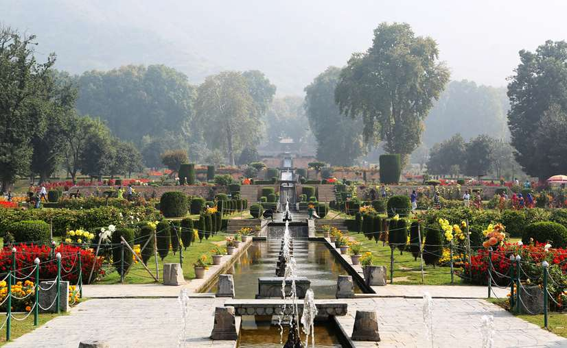

The architectural details of the three terraces of the garden are elaborate. The first terrace is a public garden or the outer garden ending in the Diwan-e-Aam (public audience hall). In this hall, a small black marble throne was installed over the waterfall. The second terrace garden along the axial canal, slightly broader, has two shallow terraces. The Diwan-e-Khas (the Hall of Private Audience), which was accessible only to the noblemen or guests of the court, now derelict, is in its centre. However, the carved stone bases and a fine platform surrounded by fountains are still seen. The royal bathrooms are located on the north-west boundary of this enclosure. The fountain pools of the Diwan-e-Khas, the Diwan-e-Aam, and in turn, the Zenana terrace are supplied in succession.[6] It has 410 fountains. In the third terrace, the axial water channel flows through the Zenana garden, which is flanked by the Diwan-e-Khas and chinar trees. At the entrance to this terrace, there are two small pavilions or guard rooms (built in Kashmir style on stone plinth) that is the restricted and controlled entry zone of the royal harem. Shahjahan built a baradari of black marble, called the Black Pavilion in the zenana garden. It is encircled by a fountain pool that receives its supply from a higher terrace. A double cascade falls against a low wall carved with small niches (chini khanas), behind the pavilion. Two smaller, secondary water canals lead from the Black Pavilion to a small baradari. Above the third level, two octagonal pavilions define the end wall of the garden. The baradari has a lovely backdrop of the snow mountains, which is considered a befitting setting for the Bagh
